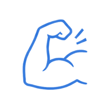
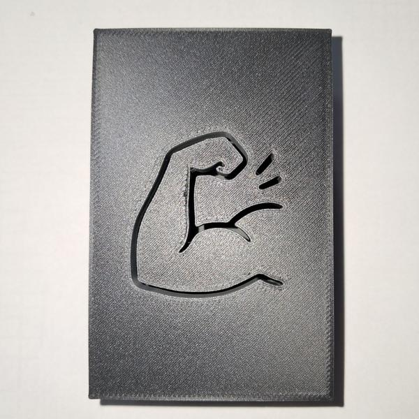

Ficha de um paciente da demonstração
Amplitude de Movimento
Amplitude e dor relatada
116°
+6° desde a última sessão
Ver o goniômetro funcionandoO Rehabit une um goniômetro digital a um sistema web para clínicas de fisioterapia: o ângulo da articulação chega à tela em tempo real, e cada sessão vira um ponto no gráfico de evolução do paciente.

Integrantes
5
e 2 professores orientadores
Leituras por segundo
10
durante a captura do movimento
Testes automatizados
148
na API do sistema
Pacientes na demonstração
16
com meses de sessões fictícias

Ficha de um paciente da demonstração
Amplitude e dor relatada
116°
+6° desde a última sessão
Ver o goniômetro funcionandoConta de demonstração
Entre com um perfil de teste: uma fisioterapeuta de clínica fictícia, com pacientes e meses de sessões. Dá para ver tudo; nada pode ser alterado.
Entrar na demonstraçãoPrefere usar dados seus? Cadastre sua clínica.
Veja o goniômetro em ação
Uma simulação da tela Dispositivo mostra como o ângulo chega ao sistema e como a amplitude é calculada.
Ver funcionandoA amplitude de movimento é um dos principais sinais de que a fisioterapia está funcionando. Na prática, ela ainda é muito avaliada a olho, e mesmo com o goniômetro manual falta um padrão de medida. A ideia surgiu de quem viveu isso de perto: um professor da escola e um integrante do grupo, ambos em tratamento, não tinham um jeito confiável de comparar o avanço de uma sessão para a outra.
A avaliação feita a olho é menos precisa do que a medida com goniômetro (ANDRADE et al., 2003).
Sem um protocolo para posicionar o paciente e o aparelho, as medidas deixam de ser comparáveis entre sessões e entre profissionais (NORKIN; WHITE, 2016).
Anotadas em fichas, as medições não viram um gráfico que o profissional e o paciente consigam acompanhar.
Desenvolver um goniômetro digital integrado a um software que ajude fisioterapeutas a realizar e acompanhar medições articulares, com mais precisão, padronização e praticidade na avaliação dos pacientes.
Levantamento bibliográfico nas bases Google Acadêmico, SciELO, PubMed e Nature, e entrevista com profissional de fisioterapia atuante no mercado.
Acompanhe a leitura do goniômetro em tempo real e capture a amplitude do movimento, como na tela Dispositivo do sistema.
Leitura ao vivo
Ângulo enviado pelo goniômetro em tempo real
0°
últimos 6 s
No sistema, o mesmo painel aparece dentro do formulário de sessão: o fisioterapeuta grava o movimento completo e a amplitude cai sozinha no campo, junto com a curva do movimento.
Quer ver por dentro?
Use o perfil de teste da conta de demonstração e navegue pelas telas com dados fictícios.
Entrar na demonstraçãoTrês passos, do braço do paciente ao gráfico de evolução.
O goniômetro, preso ao segmento que se move, calcula o ângulo da articulação com um acelerômetro e um giroscópio.
Pelo Wi-Fi, cada leitura chega ao sistema e aparece na tela do fisioterapeuta em tempo real.
O fisioterapeuta grava o movimento completo: a amplitude e a curva ficam salvas na sessão e entram no gráfico de evolução.
Preso ao segmento que se move, sente a inclinação e a rotação da articulação.
Junta acelerômetro e giroscópio num filtro complementar, calcula o ângulo e manda à API.
Confere o aparelho e quem está logado, e guarda cada sessão.
Clínicas, pacientes, sessões e medições.
O fisioterapeuta acompanha o ângulo e grava o movimento.
O goniômetro não recebe conexões: os comandos da tela voltam na resposta de cada envio dele.
Cadastro de pacientes com anamnese e meta de tratamento, e de fisioterapeutas ligados à clínica.
Marcação de sessões, presença e faltas, exportação para o Google Agenda e lembrete pelo WhatsApp.
Cada sessão guarda duração, dor relatada e amplitude, e a ficha mostra a evolução e o progresso até a meta.
Mostrador com o ângulo atual, gráfico dos últimos 60 segundos, mínimo, máximo e amplitude.
Indicadores por profissional: sessões realizadas, altas concedidas e ganho médio de amplitude.
Relatório da evolução do paciente e das consultas, pronto para imprimir ou enviar.
Confirmação do e-mail por código, verificação anti-robô, limite de tentativas e recuperação de senha. Trocar a senha encerra as outras sessões.
Todas as telas têm as duas versões, para o uso confortável em qualquer ambiente.
Imagens da conta de demonstração, uma clínica fictícia criada para apresentar o projeto. Toque ou clique numa tela para ampliar.


Um ESP32 com um sensor MPU6050 (acelerômetro e giroscópio), alimentado por uma bateria recarregável, mede o ângulo e envia cada leitura ao sistema pelo Wi-Fi. O firmware, na versão 2.4, foi escrito pela equipe.

Medida e controle
Energia, na ordem do circuito

O botão Zerar marca o braço pendurado ao lado do tronco como 0°, então a placa funciona presa em qualquer orientação. O zero fica guardado mesmo desligando.
Um filtro complementar combina acelerômetro e giroscópio, e o giroscópio é calibrado toda vez que o aparelho liga.
As leituras chegam ao navegador por Server-Sent Events, com consulta periódica como reserva.
Sem tela e sem cabo: o aparelho abre um Wi-Fi próprio, e pelo celular se escolhem a rede da clínica e o código de pareamento.
O código de 6 dígitos vale 10 minutos e serve uma vez. Com ele, o aparelho ganha um token próprio, que a clínica pode revogar.
Desde o firmware 2.4, o aparelho confere o certificado HTTPS do servidor, e a configuração só reabre pelo botão BOOT, com o aparelho na mão.
Zerar, identificar o aparelho, gravar e reiniciar. O aparelho não fica escutando: o comando volta na resposta de cada envio.
O servidor dita o ritmo: 10 leituras por segundo gravando, 2,5 com a tela aberta e uma a cada 2 segundos sem ninguém olhando.
O goniômetro não tem tela: é o LED azul que conta o que está acontecendo, e cada situação tem um jeito próprio de piscar. A luz roda numa tarefa à parte do resto do firmware, então o ritmo não depende da internet. Dentro do sistema, o tutorial da tela Dispositivo diz o que fazer em cada caso.
Uma piscada curtinha a cada 2 segundos
Tudo certo
Fraca e parada, logo depois de ligar
Calibrando o sensor
Acesa forte, sem piscar
Gravando
Pisca muito rápido por 4 segundos e para
Identificando
“Respirando”: acende e apaga devagar, bem suave
Esperando configuração
Pisca devagar: meio segundo acesa, meio apagada
Sem Wi-Fi ou sem pareamento
Piscada dupla a cada 2 segundos
Servidor não responde
Pisca rápido sem parar, desde que é ligado
Sensor não encontrado
O plano do projeto prevê testes funcionais e unitários para validar a precisão dos sensores, o tempo de resposta do sistema e a segurança dos dados. Os testes do software já estão em uso; as medidas com o aparelho estão previstas.
148 testes de integração rodam a API com banco em memória: login e limites de tentativa, senhas e sessões, fotos, goniômetro, exclusão de conta e as contas de demonstração.
No Chromium, 79 verificações de segurança percorrem todas as telas, e 23 de ponta a ponta usam a API de verdade: cadastro com foto, login, goniômetro e recuperação de senha.
Um programa próprio confere cada peça depois da solda (LED, barramento I2C, MPU6050, Wi-Fi e quedas de energia) e diz qual falhou.
Em outubro de 2026, a API, o site e o firmware foram revisados com base no OWASP Top 10. As falhas encontradas foram corrigidas, a maioria com um teste automático que impede que voltem.
Comparar as leituras do aparelho com as de um goniômetro universal em ângulos conhecidos e registrar a diferença.
Medir quanto tempo leva entre o movimento do paciente e a leitura aparecer na tela do fisioterapeuta.
Como o Rehabit foi construído, o modelo do banco de dados e as referências do projeto.
Front-end
HTML, CSS e JavaScript puros, com animações em GSAP
Back-end
API REST em Java 17 com Spring Boot
Banco de dados
PostgreSQL (H2 no desenvolvimento)
Hardware
ESP32, MPU6050 e bateria 18650, com firmware 2.4 em C++ (Arduino)
Hospedagem
Vercel para o site e Render para a API

Trabalho de Conclusão de Curso do Ensino Médio com Habilitação Profissional de Técnico em Desenvolvimento de Sistemas da Etec Prof. Carmine Biagio Tundisi, em Atibaia (SP), 2026.
O desenvolvimento do Rehabit tem o apoio da Topia Invest.
Plataforma onde se cadastram projetos de desenvolvimento sustentável, com metas de arrecadação, para atrair financiadores comprometidos com os Objetivos de Desenvolvimento Sustentável da ONU.
A Topia Invest apoiou financeiramente o desenvolvimento do Rehabit. Assim como o nosso projeto, ela nasceu de um trabalho de conclusão de curso de estudantes de Atibaia.
Conhecer a Topia Invest (abre em nova aba)